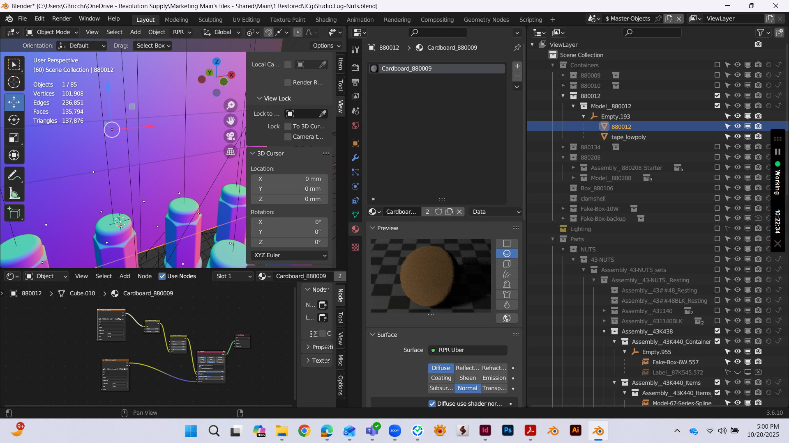

Business Intelligence - Amazon PPC - Marketplace Growth - Automation
Building a Marketplace Growth System for a Technical Automotive Portfolio
A business intelligence case study on how fragmented Amazon performance data was transformed into a scalable growth system: cleaner advertising structure, stronger product economics, better listing quality, and automated workflows that made the account easier to understand, manage, and scale.
Sales evolution as the operating proof
This dashboard view matters because it shows the account moving over time. The goal was not a one-week spike; it was to build a system that could keep producing stronger sales pressure as advertising, listing quality, reporting, and automation started working together.

The problem: the account had data, but not a growth model
The account already had demand, historical sales, a large catalog, and enough advertising data to support serious decision-making. The challenge was not simply to increase sales; it was to understand why sales moved, which products deserved investment, which keywords had defensible value, and where the business was only buying temporary volume through paid traffic.
The first step was to turn the account into something readable. The framework separated demand, acquisition, conversion, and product economics. This allowed PPC to stop functioning as basic campaign maintenance and start functioning as a system of capital allocation.

The KPI layer: sales, traffic, conversion, and retail scale
The core BI model connected retail sales, traffic source, conversion rate, product-level ad performance, and keyword behavior. The goal was to understand whether growth was coming from better demand capture, more paid acquisition, stronger listing conversion, or a combination of the three.
The important read was not that one metric improved in isolation. The healthier story was that sales, traffic, conversion, and search visibility started moving in a coordinated way. That is the difference between a brand temporarily buying sessions and a brand building a stronger marketplace position.
Retail Sales by Period
Traffic Mix
Conversion Rate Over Time
Retail Sales Over Time
Sales Index and Conversion Rate
Sales is shown as an index while conversion uses the actual monthly conversion-rate values from the KPI data. This keeps the business scale and the customer-quality signal readable in the same view.
Growth Driver Index
A simplified index of what changed: traffic expanded, paid search became more aggressive, and conversion quality improved enough to support the sales lift.
Measured KPI Shift
A before/after view built from measurable levers: retail sales index, ad spend index, estimated profit index, conversion-rate index, and keyword ownership share. Ad spend scaled hard, but sales, profit, conversion, and ownership also moved.
Rebuilding the advertising logic around intent
Paid search was reorganized so that each campaign type had a clear role. Automatic campaigns were useful for discovery and search term harvesting. Exact campaigns controlled validated, high-intent queries. Phrase campaigns captured structured variations. Broad campaigns were treated carefully, with search-term mining and negatives, instead of being left as uncontrolled traffic generators.
This changed the way the account could be managed. Instead of asking whether ads were working, the account could be evaluated through sharper questions: which terms were worth defending, which queries were wasting spend, which products had enough conversion strength to deserve more budget, and which campaigns were creating learnings that could improve the rest of the portfolio.
Auto
Discovery and search-term harvesting.
Exact
Control for validated, high-intent queries.
Phrase
Structured variations around proven intent.
Broad
Exploration with search-term mining and negatives.
Using BI to decide where growth deserved investment
The most important shift was moving from campaign-level thinking to portfolio-level thinking. Some products can absorb more traffic because they have stronger conversion, clearer search intent, and better economics. Others may generate sales but become inefficient once spend, click cost, conversion rate, order volume, and margin are considered together.
The two product snapshots use the same 0-450 axis so the difference is visible without the chart quietly changing the scale. Product B was the clearer revenue lever, but Product A still mattered because its conversion strength and low ACOS made it a useful benchmark for the rest of the catalog.
Product Efficiency Comparison
Side-by-side view of the operating logic: sales scale, spend, orders, and ROAS were read together before deciding where to push budget.
Product Ad Snapshot A
Product Ad Snapshot B
Improving conversion quality, not just traffic volume

Increasing traffic is easy if the only tool is ad spend. The harder problem is improving the quality of that traffic and making sure the product detail page can convert it. Conversion rate was treated as a control variable for growth.
Conversion rate improved on average while total traffic and Paid Search traffic also expanded. That combination matters because it suggests the account was not simply buying more unqualified traffic. It was becoming better at converting a larger demand pool.
The strategic change was to stop treating ads, copy, imagery, and reporting as separate workstreams. Paid search revealed demand, BI decided which demand deserved investment, and listing improvements helped convert that demand with clearer technical information.
A useful quality signal is the relationship between conversion rate and refund pressure. If the listing attracts better-matched customers and explains fitment more clearly, conversion can improve while refunds move down. That is a stronger story than sales scale alone because it shows less wasted demand.
Listing and creative quality also supported this improvement. Product information was reorganized so customers could understand compatibility, specifications, use case, and value faster. See the creative and listing quality case study.
Conversion Rate vs Refund Rate
Modeled from the KPI story: conversion quality improves as refund pressure declines, which is the kind of signal that points to better product-page clarity rather than just more traffic.
Best Seller Rank Trajectory
Illustrative rank path: a product moved from roughly 105 to around 20 by February, then stabilized in the 25-30 range instead of returning to the original baseline.
Automation as an operating advantage
Marketplace optimization becomes slow when every report, change, asset, and comparison requires manual repetition. The account needed a faster way to read performance, detect changes, and move from analysis to execution.
Automation helped reduce repetitive work across reporting, analysis, and production workflows. On the BI side, recurring performance exports could be turned into clearer views of sales, traffic, conversion, campaign behavior, and product-level economics. On the production side, repetitive asset-preparation and rendering tasks could be standardized, especially for technical product visuals where consistency and speed matter.

Connecting keyword ownership with product economics
Keyword data was not useful only for bidding. It was also a way to understand marketplace positioning. A keyword has value when customer intent is relevant, the product can satisfy that intent, and the listing converts enough of that traffic to justify continued investment.
The before-and-after ownership view is intentionally simple: before the work, the category looked like a competition-owned search space. After restructuring PPC, improving listings, and reading keyword data as a portfolio signal, the brand became the stronger owner of the demand that mattered.
Keyword Ownership Before
Keyword Ownership After
Search Demand Signals
Keyword Defense Path
A modeled pathway showing how discovery campaigns, exact-match defense, listing relevance, and organic rank work together.
Why the system worked
The portfolio grew because the quality of decision-making improved. Retail sales showed whether the business was actually expanding. Traffic mix showed how that growth was being acquired. Conversion rate showed whether the additional demand was qualified. Product-level PPC data showed where spend was economically justified. Keyword data showed where demand could be defended or expanded.
Retail growth
Average weekly retail sales increased by approximately 26.3% across the compared periods.
Traffic expansion
Total traffic grew by approximately 19.4%, showing broader marketplace reach.
Paid Search scale
Paid Search traffic increased by approximately 119.4%, supported by a more intentional campaign structure.
Conversion improvement
Average conversion rate improved by approximately 5.5%, suggesting that traffic quality and listing clarity improved together.
The real improvement was not one isolated campaign change. It was the creation of a system where advertising, organic visibility, conversion, product economics, listing quality, and automation could inform each other.Contact me